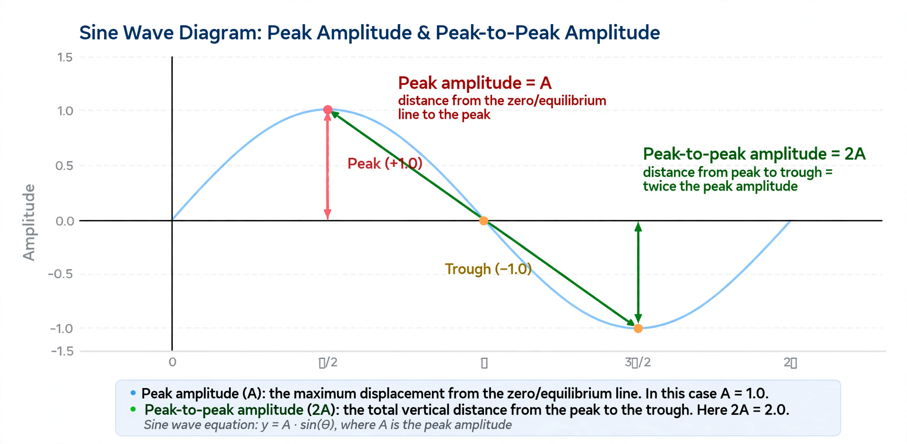

The amplitude of a periodic variable is a measure of its change in a single period (such as time or spatial period). For a non-periodic signal, the amplitude is its magnitude compared with a reference value. There are various definitions of amplitude, depending on the context; in all cases it is the extent of a vibration or oscillation.
| Amplitude | |
|---|---|
| Common symbols | A |
| SI unit | Depends on the quantity (e.g. metre, volt, pascal) |
Peak amplitude is the maximum absolute value of a signal measured from its equilibrium position. For a sinusoidal wave y = A sin(kx − ωt + φ), A is the (peak) amplitude.
The peak-to-peak value is the difference between the maximum and minimum values of the signal, equal to twice the peak amplitude for a symmetric waveform.
The root mean square (RMS) amplitude is the square root of the mean of the squared signal values. For a sine wave the RMS amplitude is the peak amplitude divided by √2 (about 0.707 of peak), and it is the quantity most directly related to the power carried by the wave.
Amplitude determines the loudness of a sound wave (related to intensity, proportional to amplitude squared) and the brightness of light. In electronics, amplitude modulation (AM) encodes information by varying the amplitude of a carrier wave. In quantum mechanics, probability amplitudes are complex numbers whose squared magnitudes give probabilities.
Amplitude — recreated from memory.